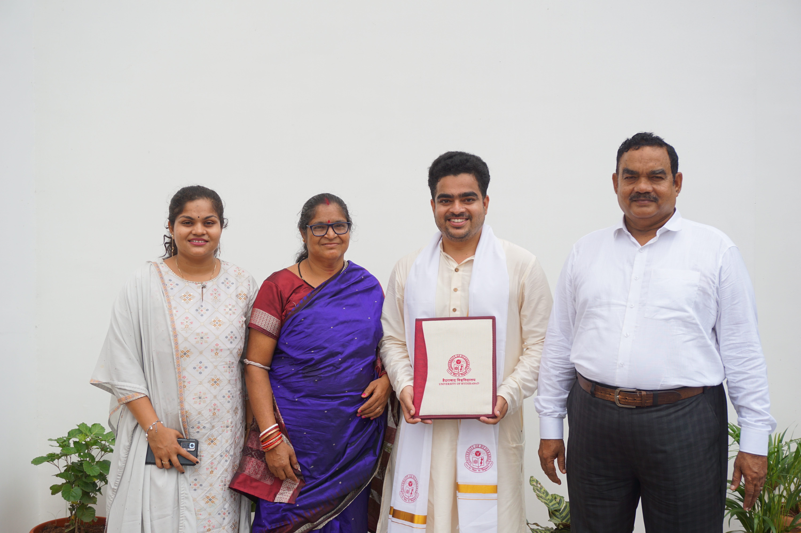
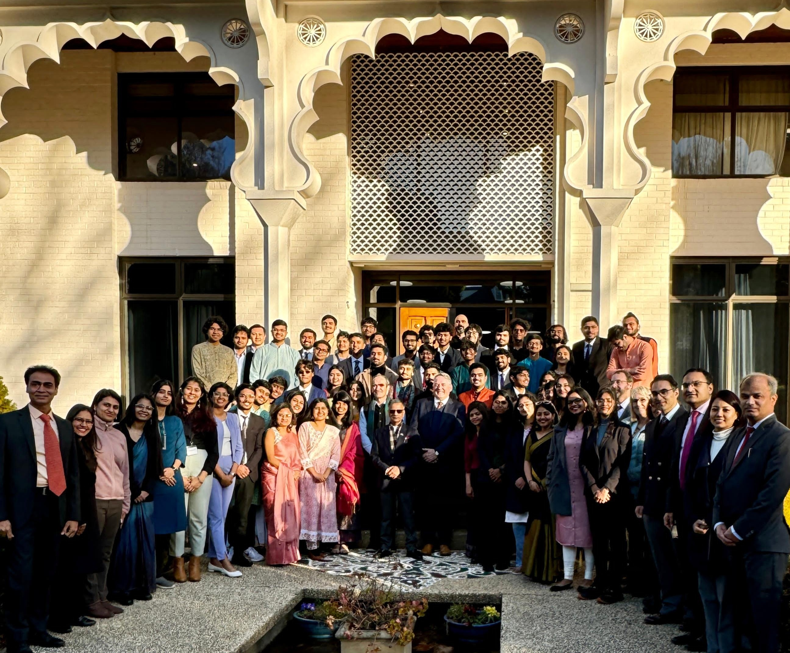
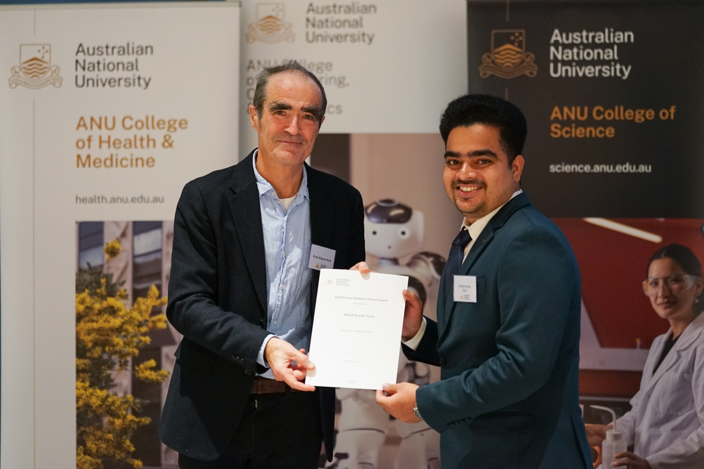
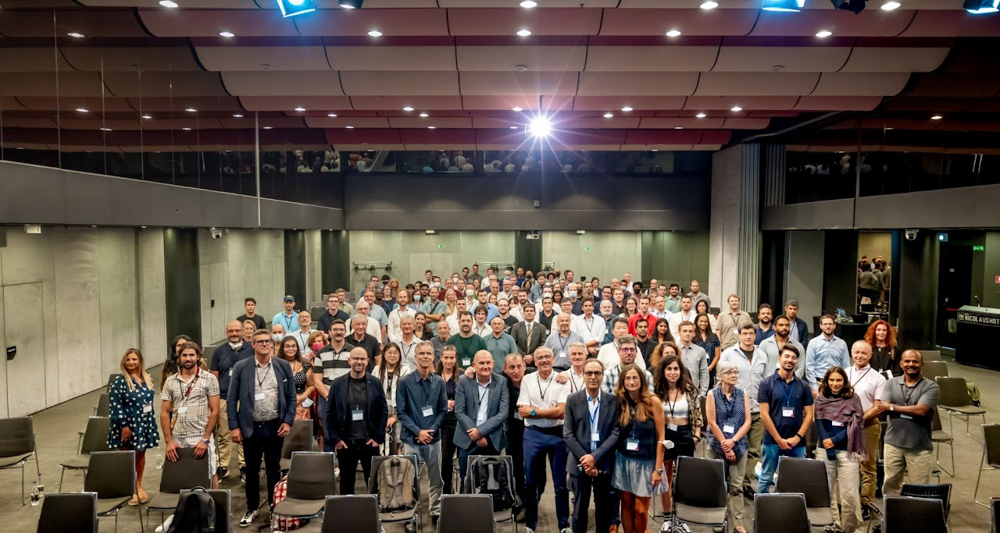

01 Oct 2024 | PhD Convocation, University of Hyderabad, India
Photograph during the official PhD award ceremony, accompanied by my parents and sister. This occasion marks the successful completion of my doctoral studies—a significant milestone in my academic journey. I am deeply grateful for the unwavering support of my family and the invaluable guidance of my PhD supervisor, Prof. G. Manoj Kumar, whose mentorship played a crucial role throughout my research.

23 Jul 2024 | Felicitation Ceremony at the Indian High Commission, Australia
Group photograph at the Indian High Commission in Canberra, Australia, during a special felicitation ceremony for the recipients of the Future Research Talent (FRT) Award. It was an honour to be invited, along with fellow awardees, as part of the delegation recognized for academic excellence and research potential during our visit to the Australian National University.

19 Jul 2024 | Future Research Talent (FRT) Award, Australian National University, Australia
Receiving the prestigious Future Research Talent (FRT) Award from Prof. Kiaran Kirk, Dean of the College of Science at the Australian National University (ANU). The program offers short-term research opportunities to selected students from top Indian institutions in science and related disciplines. It was a great opportunity to engage with leading researchers, experience ANU’s world-class research environment, and broaden my international research exposure.

09 Sep 2022 | XII World Conference on Laser Induced Breakdown Spectroscopy-LIBS2022, Bari, Italy
A memorable photograph from the LIBS2022 World Conference, held in the historic city of Bari, Italy. It was a great experience to be part of this gathering that brought together a diverse group of researchers, scientists, and professionals, fostering valuable discussions and collaborations in the areas of LIBS and laser spectroscopy.